Telling a story
Having got up and running, here are some next steps to get you familiar with the storytelling features in Fungus.
Adding Characters, for use in Say commands
We can associated words spoken by the Say Command with a particular Character. Consider the following Tom and Jerry scene:
[Tom] Where is that mouse?
[Jerry] Where is that cat?
[Tom] Aha...
[Jerry] Arrrrggggggg!!!!!!!
To implement the above in Fungus we need to create and name two Characters. Do the following:
-
(setup) Create a new scene, add a Fungus Flowchart to the scene, and select the Block in the Flowchart.
-
Rename the Flowchart Block "cat and mouse".
-
Choose menu:
Tools | Fungus | Create | Character:

-
You should now see a new gameObject "Character" in the Hierarchy window, named Character.
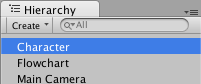
-
Ensure gameObject "Character" is selected, and edit its properties in the Inspector. Rename the gameObject to "Character1 - Tom", then in its Character (Script) component set the Name Text to "Tom" and the Name Color to red:
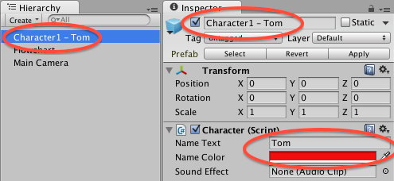
-
Repeat the previous two steps to create a second character "Character2 - Jerry", then in its Character (Script) component set the Name Text to "Jerry" and the Name Color to blue:
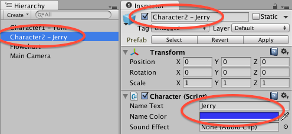
-
Now we have our two character gameObjects, we can assign them to any Say commands as appropriate.
-
Create a Say Command for Tom, with text "Where is that mouse?", setting the Character of this Say command to "Character1 - Tom":

-
Repeat the above step for the 3 remaining statements, for:
- Jerry "Where is that cat?"
- Tom "Aha..."
- Jerry "Arrrrggggggg!!!!!!!"
Assigning the appropriate Character for each Say Command from the menu of Character gameObjects in the Hiearchy.
-
You should now have a sequence of 4 Say commands in your Block:
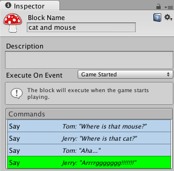
-
When you run the scene you should see a sequence of statements, clearly showing who is saying what - both the character name is given, and also that name is coloured according to the properties we set for the character gameObjects (red for Tom, and blue for Jerry):

Listing portrait image(s) for use by Characters
If you add one or more portrait images to a character, then each Say command for that character can define which of those portrait images should be displayed, alongside the (colored) name of the Character.
To add portrait images to a character do the following:
-
(setup) Create a new scene, add a Fungus Flowchart to the scene, and select the Block in the Flowchart.
-
Rename the Flowchart Block "The case of the missing violin".
-
Create a character, and in the Inspector give your character Name Text (we chose "Sherlock") and a name color.
-
Now in the Inspector click the Add Portrait button (the plus-sign "+"), to get a 'slot' into which to add a portrait image:
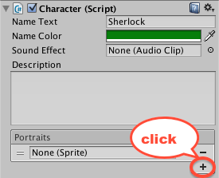
-
Drag the appropriate image into your new portrait image slot (in this screenshot we used the 'condident' image from the Sherlock example project). Also set the direction that the image is facing (left / front / right):
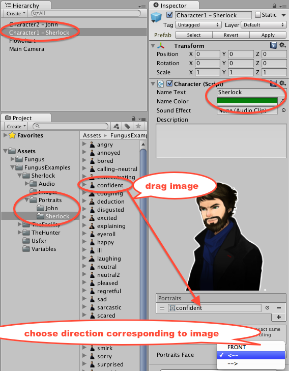
-
Create a second character (e.g. John, using Name Color blue, and portrait image 'annoyed').
-
Now select your Block in the Fungus Flowchart, so you can add some Commands to be executed...
-
Create a Say command, for your Sherlock Character, saying "Watson, have you seen my violin?" and choosing portrait 'confident' (since this is the only we added to the Character):

-
Add a second Say command, this time for Character John, saying "No, why don't you find it yourself using your amazing powers of deduction..." and choosing the 'annoyed' portrait for John.
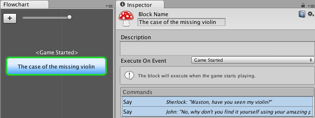
-
When you run the scene you should see a sequence of statements, clearly showing who is saying both with (colored) name text AND also the portrait image you selected for each Say command:
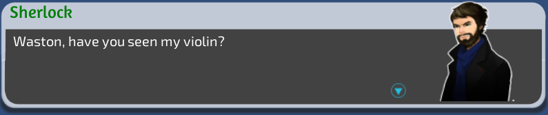

As you can see in some of the Fungus Example projects, many games will have a wide range of different portrait images for each character, to allow a full range of visual expression of emotion to support the text of Say commands:

Add a Stage
Portrait images can be used in two ways in Fungus.
- They can be shown as part of the Say commands in the Say Dialog.
- Alternatively Portraits can be displayed and moved around the screen inside Fungus Stages, using the Portrait Command.
Create a simple stage that covers the whole game Window as follows:
-
(setup) Create a new scene, add a Fungus Flowchart to the scene, and select the Block in the Flowchart.
-
Rename the Flowchart Block "stage demo".
-
Create a Fungus Stage gameObject in the scene by choosing menu:
Tools | Fungus | Create | Stage:
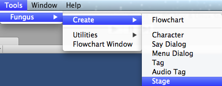
-
You should now see a new gameObject "Stage" added to the scene Hierarchy.
-
If you select it you will see its properties in the Inspector. We can leave the default settings, since these are for the stage to cover the whole Game window. There are some child gameObjects inside the Stage, but you don't need to worry about these unless you are doing some advanced customisation of stages for a particular game effect.

Now you have added a Fungus Stage to your scene, you will be able to make large Portrait images appear / move in-out of the screen using the Portrait Command in Fungus Flowchart Blocks...
Displaying Portrait images on stages with the Portrait command
Once you have a Fungus Stage, and a character then you can instruct Fungus to display / move onscreen the Character Portrait images. To make character images appear as part of a scene do the following:
-
(setup) Create a new scene, add a Fungus Flowchart to the scene, and select the Block in the Flowchart.
-
Rename the Flowchart Block "sherlock enters dramatically".
-
Create a Fungus Stage gameObject in the scene by choosing menu:
Tools | Fungus | Create | Stage. -
Create a new character, name the gameObject "Character1 - Sherlock", set the Name Text to "sherlock" and the Name Color to green. Add to this character a portrait (we used the sherlock-confident image from the Fungus Example project "Sherlock"). And set the image facing to the appropriate side (in our case: left):
-
Add a Portrait Command by clicking the Add Command button (the plus-sign "+"), then choosing menu:
Narrative | Portrait:
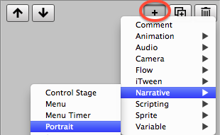
-
You will now see your new Portrait command in the top half of the Inspector, and its Command properties in the bottom half of the Inspector. Note the red exclamation mark at the right of the highlighted (green) Command row - this indicated when a command has one or more required properties that have not been set. We see the error message "No character selected":
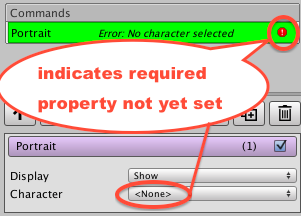
-
Set the portrait's character to "Character1 - sherlock", and set the following properties:
- Portrait: confident
- Facing: <-- (left)
- Move: Yes (check the checkbox)
- From Position: Offscreen Right
- To Position: Right

-
When you run the scene, the Sherlock portrait image should move into view having started from Offscreen - Right. The image stops when it gets to about a third the way onto the screen:
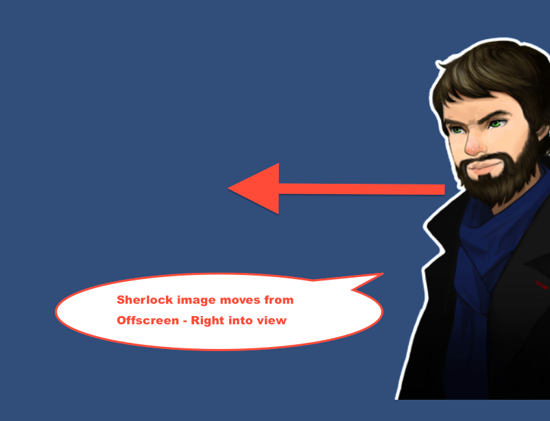
Note, a common Command flow sequence is:
- to have a character enter on screen (Portrait command),
- then have that character say something (Say command),
- then have another character enter the screen (Portrait command),
- and then that second character says something (Say command).
Here is just such a sequence for the "Case of the missing violin" two-sentence scenario explored in the recipe to learning how to create Fungus Characters (recipe: Listing portrait image(s) for use by Characters):
Here we see the Play Mode user experience of the output of running such a workflow:

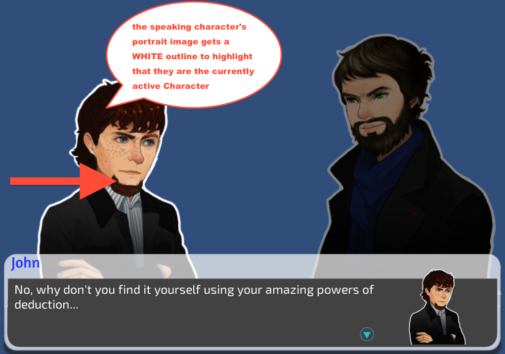
We can also see that the character that is Say'ing something, has a WHITE-outline around its Stage portrait, to visually reinforce to the user which character is speaking at any point in time...
Play some music
Music sound clips loop, so they are restarted once they have finished playing. Often the first Command in a Block is a Play Music Command. Add music to a Block as follows:
-
(setup) Create a new scene, add a Fungus Flowchart to the scene, and select the Block in the Flowchart.
-
Add a Play Music Command to the current Block by clicking the Add Command (plus-sign "+" button) in the Inspector, and then choosing menu:
Audio | Play Music. -
Ensure the Play Music command is selected (green highlight) in the top of the Inspector, and then drag the desired music clip file into the "Music Clip" property in the bottom half of the Inspector:
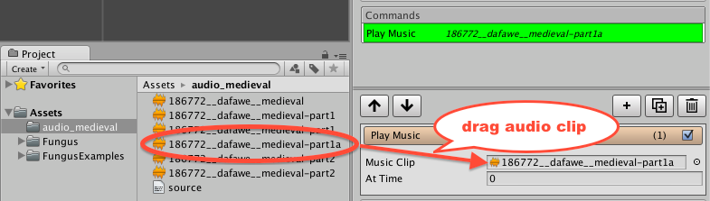
-
Change the volume as desired
(the default is 1, values are between 0.0 and 1.0, representing percentages of volume from 0% - 100%). -
Play your scene - the music clip should play, and keep looping.
NOTE: If you wish to start playing the music clip from a known time-point (rather than from the beginning), then enter the desired time-point in the Inspector property "At Time" for your Play Music command.
Add menu commands to branch to other blocks
Let's use a Say command above to ask a tricky mathematical question, and demonstrate the Menu command by offering the user a choice been "correct' and "incorrect" answers. Menu commands transfer control to another block - so we'll need to add 2 new blocks to correspond to the 2 answers. Do the following:
-
(setup) Create a new scene, add a Fungus Flowchart to the scene, and select the Block in the Flowchart.
-
Rename the Block in the Flowchart to "Question".
-
Create a Say command, with Story Text to ask the question: "Is 2 + 2?".
-
Uncheck the "Wait For Click" checkbox (this is so we see the menu options immediately after the Say command has displayed the question):

-
Create a new Block, named "Correct" which contains a Say command with the text "Well done, you are very mathematical!". Click the plus-sign button in the Flowchart window to add a new Block to the Flowchart, rename it "Correct" and then add that Say command:

-
Select the "Question" block, and add a Menu command by clicking the plus-sign add Command button in the Inspector and then choosing menu:
Narrative | Menu.
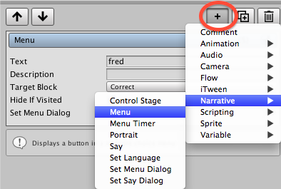
-
With this new Menu command selected (green) in the top half of the Inspector window, set the Text to "Yes" and the Target Block to your new "Correct" block:

-
You should now see how the 'flow' of commands can change from Block "hello" to Block "Correct" in the Flowchart window:
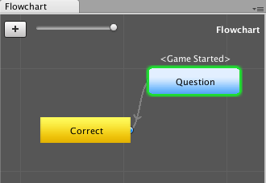
-
Add a second new Block named "Wrong", containing a Say command with text "Bad luck, perhaps consider a non-mathematical career path..."

-
Now we need to add another Menu command to our "hello" block, offering the user the "No" answer to our maths question, and passing control to Block "Wrong" if they disagree that 2 + 2 = 4. Select the "hello" block, and add a Menu command. With this new Menu command selected (green) in the top half of the Inspector window, set the Text to "No" and the Target Block to your new "Wrong" block.
-
You should now see in the Flowchart window how block "hello" can pass control to either block "Correct" or Block "Wrong" - depending on which menu answer the user selects.

-
Run the scene, and you should see the Say question appear at the bottom of the screen, and also the two Menu buttons "Yes" and "No" in the middle of the screen. Clicking "Yes" then runs the "Correct" Block's commands, and clicking "No" runs the "Wrong" block's commands:

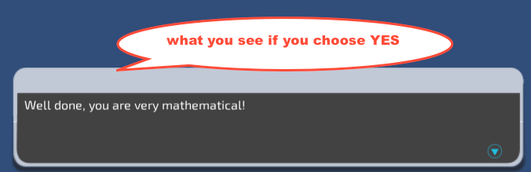
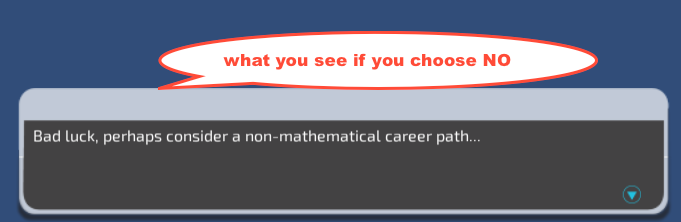
Change Camera background colour
Unity cameras determine what the user sees when a scene is running. When nothing is present in all or part of the camera's rectangle a solid "Background" colour is displayed. Unity cameras have a default Background of a medium dark blue colour. You can change this as follows:
-
(setup) Create a new 2D scene, unless you already have a scene with which to work.
-
Select the Main Camera in the Hierarchy.
-
In the Inspector for the Camera component, click and choose a different value for the Background property - often black works well.
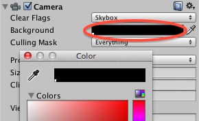
-
Now when any part of the camera rectangle (frustrum) shows no gameOjects then your custom Background colour will be what the user sees.
Add a background sprite
To add any sprite image file from your Unity Project folder into the current scene, simply drag a reference to the sprite image file from the Project window onto the Scene window, and rotate / resize desired. The sprite will appear as a new gameObject (with same name as Sprite Project image file) in the Hierarchy window:

NOTE: You may not be able to see the sprite, because what we see depends on the current settings for the camera. What the camera shows, how it moves etc. can be controlled by Fungus Views and Commmands relating to Views.
Adding and customising a view
What the main camera of a scene displays to the user, and how it moves etc. can be controlled by Fungus Views and Fungus Commmands relating to Views. A Fungus View is a special gameObject in the Hierarchy, it appears as a green outlined inner rectangle, with two filled green rectangles on the left and the right. The ratio of the outlined inner rectangle is 4:3. The ratio of the outer rectangle (which includes the two filled green left and right rectangles) is 16:9. These two ratios cover almost every common phone, tablet and computer screen width-to-height ratio. So arranging the view so that a background Sprite image looks good for both inner- and outer- rectangles of a view, pretty much ensures your game will look good on any device. Setting the background color of the camera to something like black also means on the rare device that has an odd ratio showing content outside of the view outer rectangle, the game should still look perfectly acceptable.
To add a view to the current scene do the following:
-
(setup) Create / Edit a scene that has a Sprite background image gameObject
-
Choose menu:
Tools | Fungus | Create | View:

-
Rename this View as "View1".
-
Use the two white squares to resize the view (it maintains its proportions). Use the center square outline, or vertical and horizontal arrows to move the View around the Scene window.


-
Ensure the View is selected in the Hierarchy, then position the view so that it is approximately centered on your background sprite image
-
Resize (and if necessary reposition) the View to be as big as possible, but ensuring that its outer rectangle stays within the bounds of the background sprite. (Note we've tinted the Sprite red so the green View rectangles can be more easily seen in this screenshot):
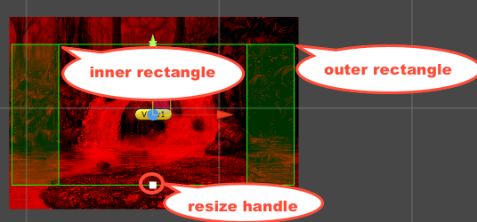
-
Note: You can also rotate the view with the Unity Rotate tool
NOTE: Utnil you add a "Fade To View" Fungus command, you still may not see the Sprite in the Game window when the scene plays, since the Main Camera has not been oriented to resize and align with the view.
Add a Fade To View command
Once you have a Scene that contains some background Sprites and Fungus Views, you are ready to use the Fungus camera related Commands to control what the user sees. The simplest camera control is to make the Game window fade from a solid colour to the Main Camera being sized, positioned (and if necessary rotated) to show a specified Fungus View. Do the following:
-
(setup) Create / being editing a Scene containing a background Sprite image, and a Fungus View that has been positioned to show all / some of the Sprite.
-
In the Fungus Flowchart rename the Block "Camera Control".
-
Add a new "Fade to View" Command to the Block. First click the Plus button in the bottom half of the Inspector window, to add a new Command, then choose menu:
Camera | Fade To View:
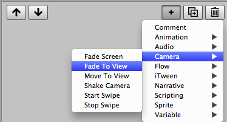
-
Now Drag "View1" from the Hierarchy window into the "Target View" property of the Fade to View Command in the Inspector:

-
(We'll keep the defaults of 1 second and fade From Color of black).
-
When you run the Scene the Game window should start off solid black, and then slowly the background Sprite image within the View rectangle should fade into view.
- Now Drag "View1" from the Hierarchy window into the
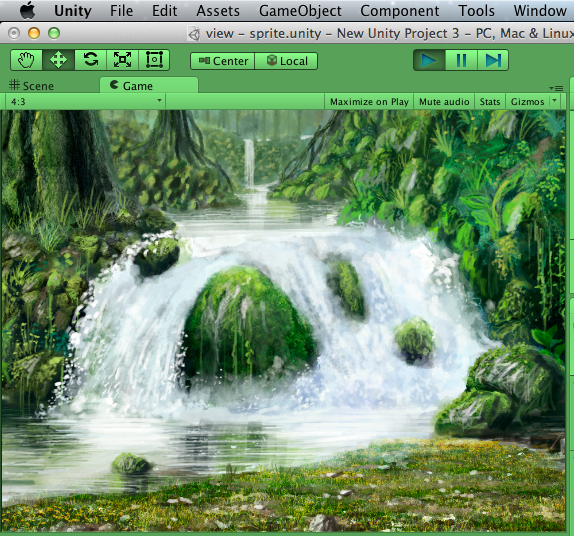